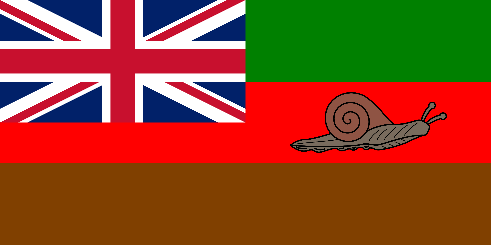
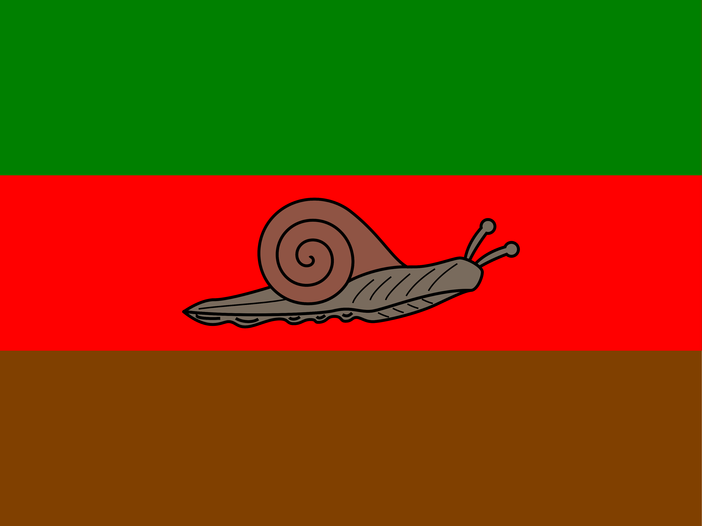

Sayamayacağımız kadar ülke gibi biz de Britanya İmparatorluğu tarafından sömürgeleštirilirsek kullanacağımız bayrak.

Bayrağımızda yešil kloroplastı, kahverengi hayvan kazuratını ve toprağı, kırmızı kanı —biyočešitliliğimizi—, ortadaki heliks (Heliks Türkčesinde salyangoz) ise ülkenin ana nüfusunu temsil ediyor.